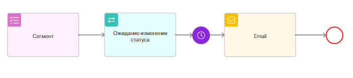

Сценарий карты коммуникаций — это цепочка последовательно выполняемых триггеров, событий и действий для отправки писем подписчикам.
Сценарий настраивается в дизайнере карт коммуникаций и всегда начинается с блока Сегмент, который по умолчанию размещён на поле для моделирования и его нельзя удалить. Дополните сценарий триггерами, действиями, шлюзами и событиями. Для этого перенесите нужные блоки с боковой панели и соедините их.
Начало внимание
Работа с картами коммуникаций доступна только в поставке On-Premises.
Конец внимание
Чтобы построить сценарий, выполните следующие шаги:
- Выберите сегмент, для которого предназначена карта.
- Добавьте триггер, который отслеживает заданные изменения в элементах приложения, где указаны подписчики сегмента, выбранного на шаге 1.
- Дополните карту блоком Таймер или Ожидание события, чтобы определить время перехода сценария на следующий шаг.
- Настройте отправку рассылки подписчикам, добавив действие E-mail. Этот шаг обязателен в любом сценарии.
- Если нужно разделить сценарий на несколько веток для разных групп подписчиков, используйте шлюз.
- Завершите цепочку сценария событием Конечное. Этот шаг также обязателен в сценарии.

В зависимости от маркетинговой задачи вы можете добавить в сценарий несколько триггеров, событий, шлюзов и блоков E-mail. Обратите внимание, из всех блоков, кроме шлюза, всегда выполняется только один переход к следующему. Только шлюз разделяет сценарий на несколько веток.
Рассмотрим подробнее настройки каждого блока. Чтобы перейти к ним, дважды нажмите на блок.
Шаг 1. Выбрать сегмент
Сценарий всегда начинается с блока Сегмент. В его настройках:

- укажите название блока в сценарии;
- выберите сегмент, для подписчиков которого выполнятся все последующие шаги сценария. Вы можете указать статический или динамический сегмент подписчиков. Для динамического сегмента список подписчиков формируется в течение всего периода активности карты. Если за это время появится подписчик, по которому соблюдены условия, заданные в сегменте, по нему запустится экземпляр карты и сценарий перейдёт на следующий шаг.
Шаг 2. Настроить триггер
После блока Сегмент разместите триггер. Он отслеживает изменения в элементах приложения, где указаны контакты. Подробнее читайте в статье «Триггеры в сценарии карты коммуникаций».
Шаг 3. Настроить событие
Вы можете задать время выполнения для следующих шагов сценария, используя блоки Триггер и Ожидание события.
Таймер
Отслеживает, когда завершится заданный период ожидания. После этого сценарий продолжится.

Примеры с этим блоком смотрите в описании кейсов Отзыв после покупки и Акция Золотые клиенты.
Ожидание события
Отслеживает, когда наступит заданная дата и время. После этого сценарий продолжится.

Пример с этим блоком смотрите в описании кейса Приглашение на вебинар.
Шаг 4. Настроить рассылку
Действие E-mail отправляет письмо подписчику. Этот шаг обязателен в любом сценарии. В настройках блока заполните поля:
- Название* — введите название блока в сценарии;
- Наименование* — укажите название рассылки;
- Тема письма* — обозначьте тему письма;
- Имя отправителя* — укажите отправителя;
- E-mail отправителя* — введите электронную почту, которая указана в привязанной учётной записи подключённого сервиса рассылки. Для отправки через Unisender Go укажите email, для которого в этом сервисе подтверждён домен рассылки. Для сервиса Sendsay можно выбрать эл. адрес из списка e-mail отправителей, заданных на стороне сервиса;
- Сервис рассылки* — выберите сервис рассылки, с которым настроена интеграция;
- Шаблон письма* — выберите шаблон для письма.
В рамках одного сценария можно выполнить нескольких рассылок. Пример смотрите в кейсе Приглашение на вебинар.
Шаг 5. Добавить шлюз
Используйте шлюз, чтобы разделить выполнение сценария на несколько веток для разных групп подписчиков в зависимости от условий, заданных в настройках шлюза. Подробнее читайте в статье «Шлюзы в сценарии карты коммуникаций».
Шаг 6. Завершить сценарий
В конце цепочки любого сценария разместите событие Конечное. Для него не нужно задавать настройки.